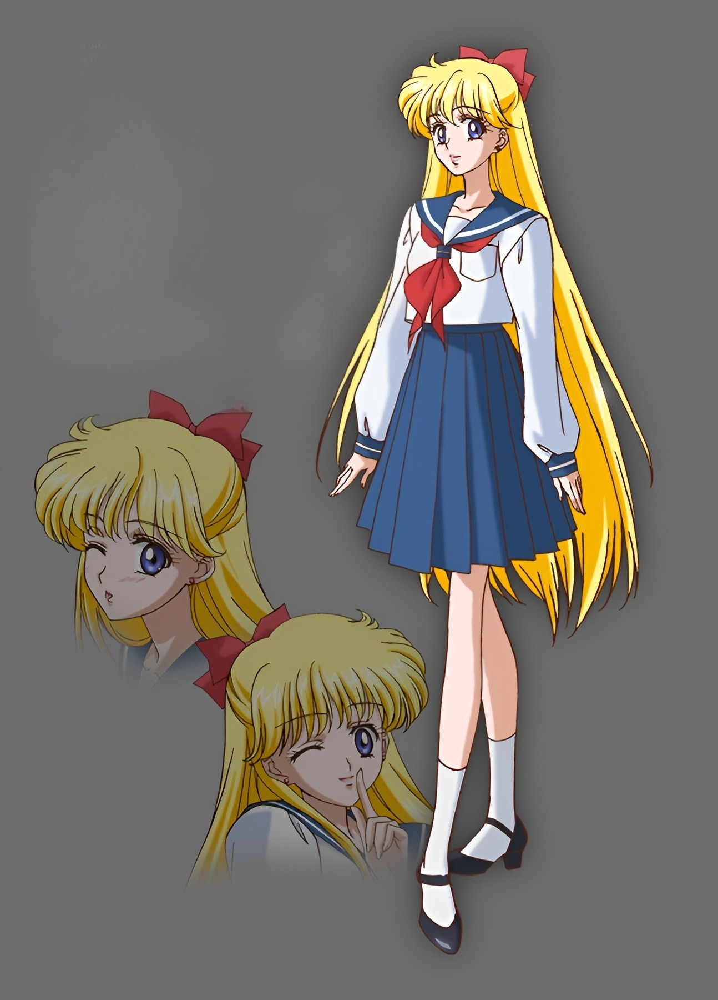
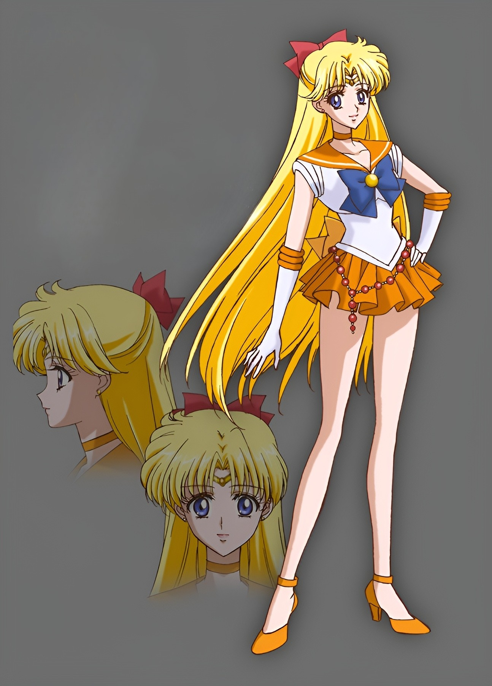

Minako Aino
Sailor Venus • Guardian of Love & Beauty


Power: 85
Speed: 90
Magic: 80
Speed: 90
Magic: 80
About Minako
Minako Aino is the charismatic idol‑in‑training and the first Sailor Guardian to awaken. As Sailor Venus, she channels the power of love and light with dazzling confidence.
Abilities
Main Attack: Crescent Beam
Special Ability: Venus Love‑Me Chain
Personality
Playful, dramatic, romantic, and secretly very responsible. Minako balances her dream of stardom with her duty as a Guardian of love.
← Back to Gallery